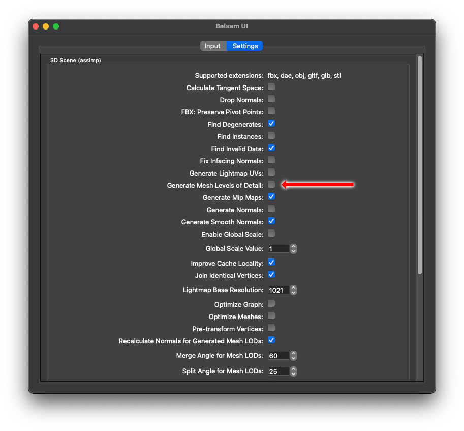
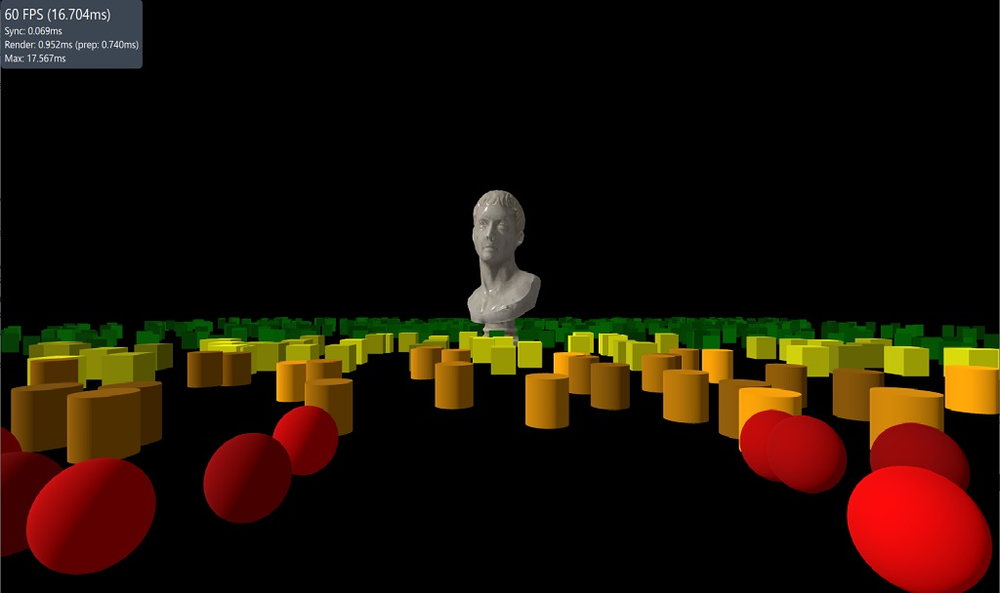
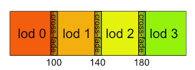

Qt Quick 3D Level of Detail
Level of Detail (LoD)
Level of Detail (LoD) refers to the technique of using alternative versions of a 3D model at different distances from the camera. The goal of doing this is to optimize resource usage by using simpler versions of the model when it is far away or a small share of the screen, while using more detailed versions when it is closer or larger portion of screen space. This approach allows for efficient use of GPU resources while maintaining visual fidelity.
Qt Quick 3D provides both an automatic as well as an explicit level of detail system. The automatic system is based on using a single mesh with multiple levels of detail stored in the mesh file. The explicit system is based on using a LodManager component to specify the different levels of detail as child models.
Automatic Level of Detail
The primary way to use the the automatic level of detail support is by importing content with the Balsam Asset Import Tool. By using the flag --generateMeshLevelsOfDetail when importing assets, the tool will generate levels of detail for each mesh when possible. This is done by trying to simplify the geometry of the original mesh, while still maintaining the overall features. What results is additional geometry as well as new index values for each additional level of detail, as well as a distance factor used to determine which mesh to use for a given render size. This distance factor is related to the distance of the object being rendered to the camera, but the most important thing is having a good ratio of geometry per pixel. This data is written to the .mesh file and will be used automatically when used by a Model.

A tradeoff to the automatic system, and the reason why it is not enabled by default is that it is possible that when the geometry is reduced, visual artifacts can also be introduced. The geometry simplification algorithm used attempts to preserve the features of the model, but in some cases it may be necessary to recalculate the normals of the mesh to maintain the intended visual appearance. This can be done by using the --recalculateLodNormals flag when importing the asset. The normal recalculation process can be further tuned by passing euler angle values to the arguments --recalculateLodNormalsMergeAngle and --recalculateLodNormalsSplitAngle to control the angle at which normals are merged or split respectively.
The main advantage of the automatic system is that it is easy to use once the asset has been imported with the appropriate settings. No additional code is required to use the automatic system and any Models that reference the generated mesh files containing levels of detail geometry will automatically choose the appropriate geometry based on how many pixels the model takes up on the screen.
It is possible to tweak automatic level of detail selection behavior either at the global level or at the per-model level by using the levelOfDetailBias property of either Camera or Model. The default level of 1.0 of each of these bias properties means to trust the value calculated by the automatic system. This value is a bias to the ideal value such that a value smaller than 1.0 will require an even smaller rendered size before switching to a lesser level of detail. Values above 1.0 will lead to lower levels of detail being used sooner. A value of 0.0 will disable the usage of levels of detail completely and always use the original mesh geometry.
The automatic system is not as flexible as the explicit system. For example the automatic system always uses the same material for all levels of detail, which may not always be desirable. Another potential downside is that there is not transition between the different levels of detail which ideally should not be necessary with automatic level of detail, but may be desireable for certain use cases.
Explicit Level of Detail
The Explicit level of detail system is more flexible than the automatic system, but requires more work to use. The explicit system is based on using a LodManager component to specify the different levels of detail as child Model components. Any children of the LodManager that are instances of Model will be considered a level of detail. This is quite powerful because each level of detail can be a completely custom model, with it's own geometries and materials.
The LodManager component also has a distances property which is used to determine which child Model to use. The LodManager node will transition to the next child Model as the camera distance approach each distance boundary. The fadeDistance property can be used to set at which distance the cross fade transition begins and ends around the distances boundaries.
This is an example of how to use the explicit level of detail system:

In the referenced example the LodManager is used to explicitly specify different mesh files for each level of detail of the marble bust.
LodManager { camera: camera distances: [100, 140, 180] fadeDistance: 10 Model { scale: Qt.vector3d(100, 100, 100); source: "meshes/marble_bust_01_LOD_0.mesh" materials: [ marbleMaterial ] } Model { scale: Qt.vector3d(100, 100, 100); source: "meshes/marble_bust_01_LOD_1.mesh" materials: [ marbleMaterial ] } Model { scale: Qt.vector3d(100, 100, 100); source: "meshes/marble_bust_01_LOD_2.mesh" materials: [ marbleMaterial ] } Model { scale: Qt.vector3d(100, 100, 100); source: "meshes/marble_bust_01_LOD_3.mesh" materials: [ marbleMaterial ] } }
For this code this is a diagram of what is being defined which points out how the distances list is used to define where the boundaries between the different levels of detail as well as the fadeDistance property which is used to define the cross fade transition.
